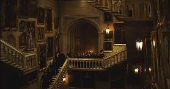
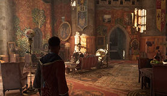
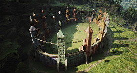

Hogwarts
Localizada nas majestosas Highlands da Escócia, Hogwarts é um icônico castelo medieval e a escola de magia mais famosa do mundo bruxo. Com suas torres imponentes, salões encantados e paisagens de tirar o fôlego, Hogwarts mistura tradição, mistério e aventura. É um destino imperdível para qualquer bruxo ou bruxa que deseje explorar um lugar repleto de história e magia.
Coisa para fazer em Hogwarts
- Explore o Salão Principal com seu teto encantado que reflete o céu em tempo real.
- Visite a Biblioteca, lar de livros raros e proibidos.
- Passeie pelos corredores vivos, onde quadros falantes e escadas em movimento prometem surpresas a cada esquina.
- Faça um passeio de barco pelo Lago Negro e aprecie a paisagem.
- Caminhe até a Cabana do Hagrid e conheça criaturas mágicas únicas.
- Explore as Estufas de Herbologia para descobrir plantas extraordinárias.



Curiosidades do Local
O castelo possui escadas que mudam de lugar, exigindo atenção redobrada. Algumas salas, como a Sala Precisa, só aparecem para quem realmente precisa. Lendas falam de criaturas misteriosas que habitam o Lago Negro e corredores secretos ainda não mapeados.